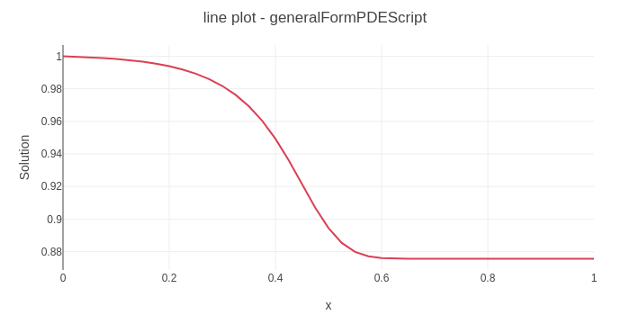
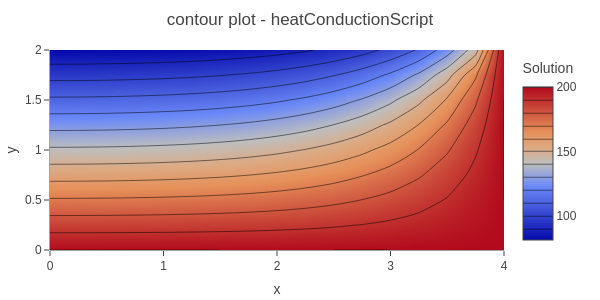
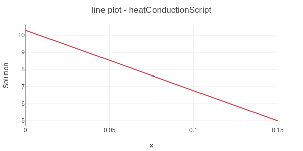
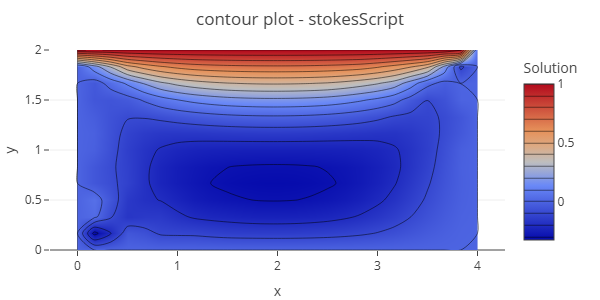
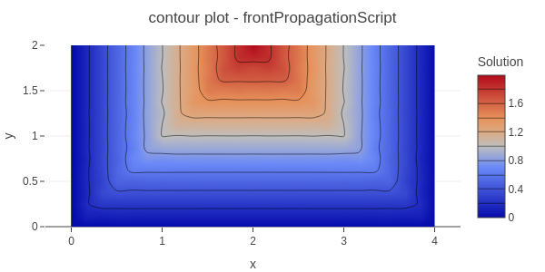

FEAScript is a lightweight, open-source finite element simulation library developed in
JavaScript.
It empowers users to perform simulations for physics and engineering problems in both
browser-based and server-side environments. FEAScript serves as an excellent tool for building
interactive web applications and facilitates hands-on learning of computational mechanics.
🎯
Our goal is to democratize finite element analysis by making simulation capabilities accessible to
everyone, everywhere.
INDUSTRY CASE STUDY
Better Building leverages FEAScript to power an online Heat Transfer Simulator for architects and engineers.
You can run simulations with FEAScript by calling its functions from JavaScript (the FEAScript API). The
API offers full programmatic control and works across multiple environments, including the browser
(simple HTML pages and online JavaScript playgrounds, e.g.
CodePen and
Scribbler
and
Scribbler ) and server-side runtimes such as
Node.js
) and server-side runtimes such as
Node.js .
.
QUICK START
The example below demonstrates a simulation workflow: steady-state heat conduction in a 2D rectangular fin with a circular hole, solved using a Gmsh-generated mesh. Create an HTML file with the code below to run the simulation. See the tutorials section for more examples.
<!DOCTYPE html>
<html lang="en">
<head>
<meta charset="UTF-8">
<title>Heat Conduction in a 2D Fin with a Hole</title>
<script src="https://cdnjs.cloudflare.com/ajax/libs/mathjs/11.12.0/math.min.js"></script>
<script src="https://cdnjs.cloudflare.com/ajax/libs/plotly.js/2.35.3/plotly.min.js"></script>
</head>
<body>
<div id="resultsCanvas"></div>
<script type="module">
import {FEAScriptModel, importGmshQuadTri, plotInterpolatedSolution} from "https://core.feascript.com/dist/feascript.esm.js";
window.addEventListener("DOMContentLoaded", async () => {
// Fetch mesh from GitHub Gist (swap the URL for any other hosted .msh file)
const response = await fetch(
"https://gist.githubusercontent.com/nikoscham/0c5a78922a16111ceef42de54fc631ea/raw/aeadcd2808f5531fd0ca1ca16d198f7d1e7f8e96/rect_with_hole.msh"
);
const meshFile = new File([await response.text()], "rect_with_hole.msh");
const model = new FEAScriptModel();
model.setModelConfig("heatConductionScript");
model.setMeshConfig({
parsedMesh: await importGmshQuadTri(meshFile),
meshDimension: "2D",
elementOrder: "quadratic"
});
// Boundary conditions (Gmsh physical group tag - 1)
model.addBoundaryCondition("0", ["constantTemp", 200]); // Bottom
model.addBoundaryCondition("1", ["constantTemp", 200]); // Right
model.addBoundaryCondition("2", ["convection", 1, 20]); // Top
model.addBoundaryCondition("3", ["symmetry"]); // Left
model.addBoundaryCondition("4", ["convection", 1, 20]); // Hole surface
model.setSolverMethod("lusolve");
const result = model.solve();
plotInterpolatedSolution(model, result, "contour", "resultsCanvas");
});
</script>
</body>
</html>
🚧
FEAScript is currently under heavy development with new features being added regularly.
Interested in contributing? Check out our
contribution guidelines
to get started.
The following list highlights key FEAScript features:
.msh file format)
Below you can explore tutorials that provide a step-by-step introduction to FEAScript. These tutorials
show how to use the FEAScript API directly by writing JavaScript code, either to integrate finite
element simulations into your own websites and applications or to run them in interactive JavaScript
playgrounds such as
CodePen and
Scribbler
and
Scribbler . Each tutorial include different variations that demonstrate the same physical problem under different
configurations, ranging from simple examples to advanced setups using external meshes or multiple
threads.
. Each tutorial include different variations that demonstrate the same physical problem under different
configurations, ranging from simple examples to advanced setups using external meshes or multiple
threads.
1D steady-state scalar transport governed by the advection-diffusion equation with a localized Gaussian source term

2D steady-state heat conduction in a cooling fin with mixed boundary conditions including constant temperature, symmetry, and convective cooling

1D steady-state heat conduction across a wall with convection boundary condition at one end and constant temperature at the other

Stokes flow in a square 2D cavity driven by a moving lid, with velocity and pressure fields resolved

Transient simulation of a solidification front advancing through a 2D domain using the eikonal equation

Please report any feedback on the tutorials above to the GitHub Discussions or Issues.
The documentation for FEAScript is currently under development. In the meantime, for information on the numerical methods used in FEAScript and other technical resources, please visit the FEAScript blog.
The core library of FEAScript is distributed under the terms of the MIT license. This website is licensed under the Creative Commons Attribution 4.0 License.